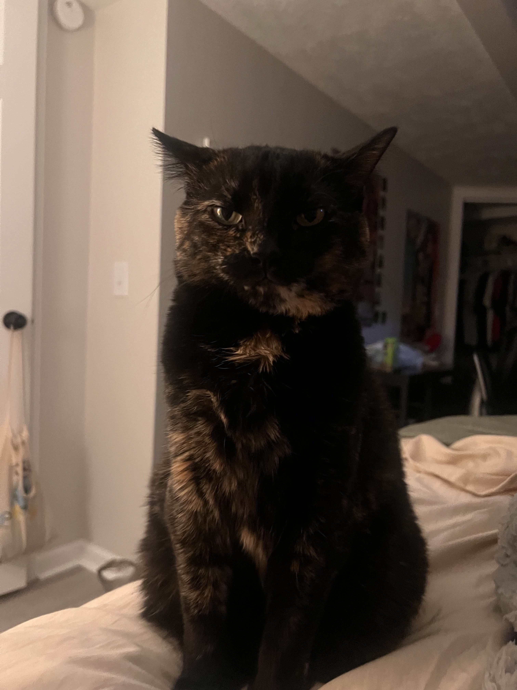
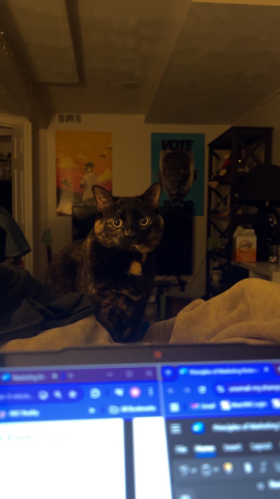
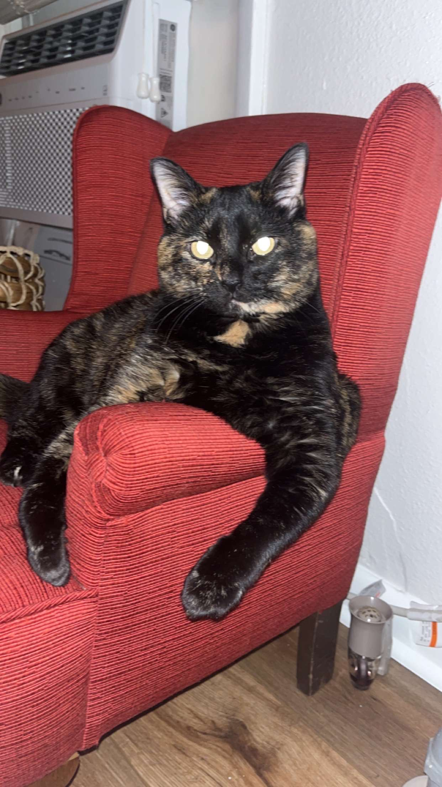

Pumpkin

Pumpkin is a 9 year old Tortoiseshell cat.
She lived with my parents, but once they got a 3rd dog, she wasn't happy.
Her favorite activites include sleeping, playing with string, and bird watching.


Fun Facts About Tortoiseshell Cats
- Tortoiseshell cats are almost always female, similar to calico cats.
- Tortoiseshell cats are considered good luck.
- They are named after the tortoiseshell marterial.
- Tortoiseshell cats are in many breeds.
Back